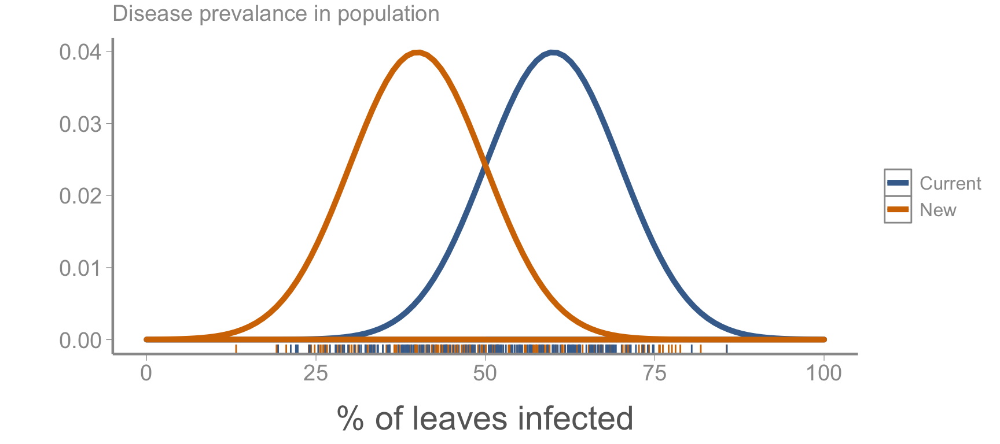
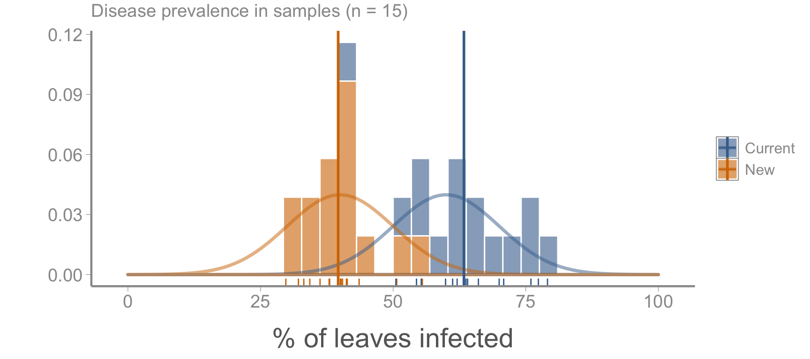
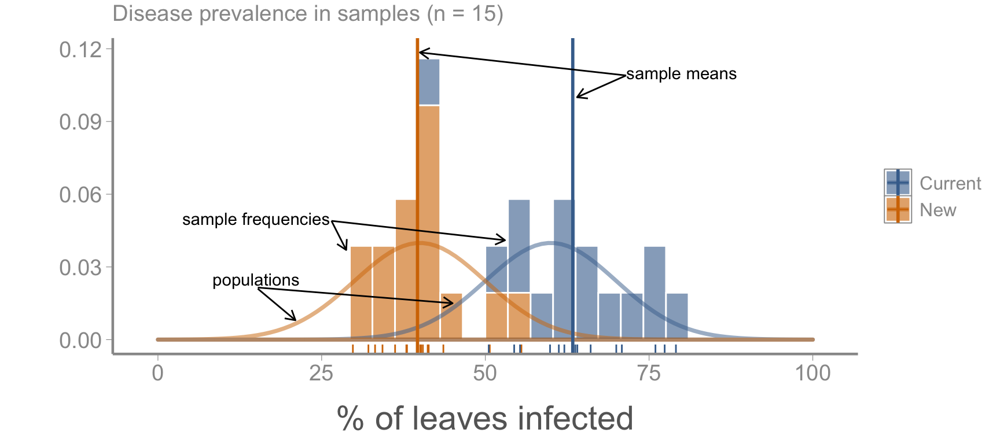
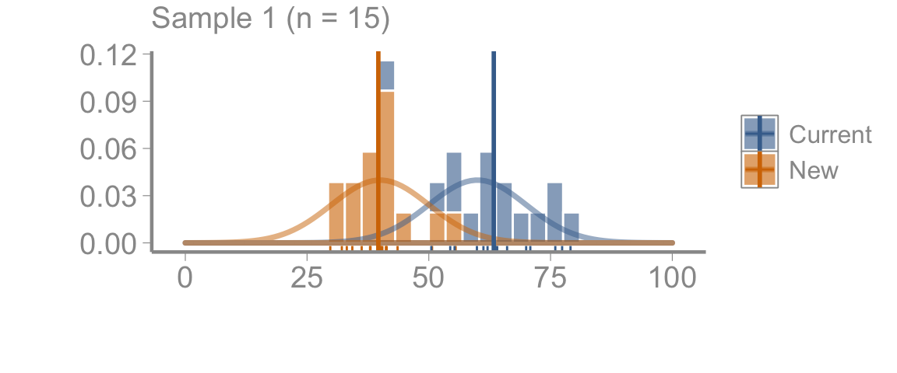
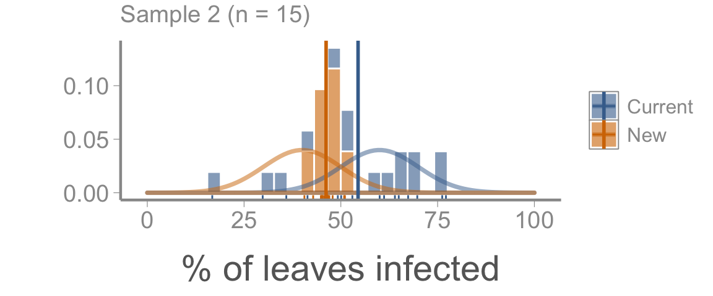
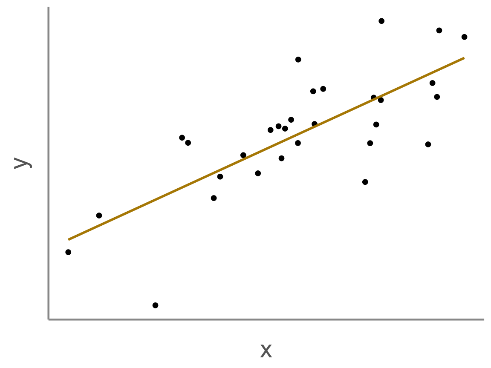

FANR 6750
Fall 2026
The study of the collection, analysis, interpretation, presentation, and organization of data (Dodge 2006)
The science of learning from data in the face of uncertainty (various)
\[Statistics = Information + Uncertainty\]
Identify relationships between variables
Estimate unknown parameters
Test hypotheses
Describe stochastic systems
Make predictions that account for uncertainty
Inductive reasoning
Often attributed to Francis Bacon
Consistent observations -> general principle
Problem: “confirmatory” observations can’t disprove theory
Example: I’ve only seen birds that fly :: all birds can fly
Deductive reasoning
Formalized by Karl Popper
Theory -> predictions -> observations
Based on falsification
Example: All birds can fly :: penguins are birds :: penguins can fly
Pattern identification (i.e., exploratory studies)
Hypothesis formation
Pattern identification (i.e., exploratory studies)
Hypothesis formation
Predictions
Pattern identification (i.e., exploratory studies)
Hypothesis formation
Predictions
Data collection
Pattern identification (i.e., exploratory studies)
Hypothesis formation
Predictions
Data collection
Models and testing
Hypothesis: New plant variety is more disease resistant than current variety3
Prediction: Disease prevalence is lower in new variety than in current variety
A collection of subjects of interest
Often, a biologically meaningful unit
Sometimes a process of interest

These are the populations
There is variation within and among populations, but:
The hypothesis is correct (mean prevalence is lower in new vs. current variety)
A collection of subjects of interest
Often, a biologically meaningful unit
Sometimes a process of interest
A finite subset of the population of interest, i.e. the data we collect
Samples allow us to draw inferences about the population
Good samples are:


These are samples
The sample means are our best estimates of the population means
But the sample means will never equal the population means (uncertainty!)
\[\large \bar{y} = \frac{\sum_{i=1}^n y_i}{n}\]
\[\large s^2 = \frac{\sum_{i=1}^n (y_i - \bar{y})^2}{n-1}\]
\[\large s = \sqrt{s^2}\]
Every sample has a different mean (and standard deviation)4


Because populations (usually) cannot be measured, sampling is essential
But sampling is inherently stochastic
Sampling produces uncertainty
Unavoidable (but that’s ok!)
Statistics is what allows us to learn about the population using samples in the face of uncertainty
The primary goal of this class is for you to understand how to make robust inferences that account for uncertainty (and the limitations of those inferences)
We will return to this basic concept (sampling error) many times this semester
Doubt is not a pleasant condition, but certainty is absurd – Voltaire

Often, we want to know whether \(x\) influences \(y\)
Statistical models measure associations between variables
Do associations tell us anything about cause and effect?
If correlation is not causation, what is it?
\(Correlation = Causation + Confounding + Noise\)
Confounding: Both \(x\) and \(y\) are influenced by a third variable \(z\)
Separating causation, confounding, and noise is the central challenge of scientific inference
Statistics can help with this challenge but cannot tell us whether associations we observe are the result of causation, confounding, or noise
Manipulative experiments are generally considered the “gold standard” for causal inference because of randomization
But causal inference from observational studies is also possible
We will discuss all of these topics in more detail throughout the semester
Statistical models allow us to quantify associations between variables
Statistical models also allow us to makes inferences about associations in the face of uncertainty
Uncertainty stems from multiple processes, the most fundamental of which is sampling
Inferences based on finite samples from a population will always be uncertain
Sampling error can make associations look bigger or smaller than they actually are
Sampling error is one of the reasons statistical associations may not be causal (or even real)
We often want to know if one variable causes another but drawing causal inferences is challenging
Next time: Introduction to linear models
Reading: Fieberg chp. 1.2-1.4
We’ll get to these!
We’ll get to these!
Note that this hypothesis is causal. Hypotheses should, in general, be causal since our goal is (usually) to learn about the mechanisms that underlie patterns we observe
We have now mentioned two types of uncertainty: The sample mean will never equal the population mean and no two samples will ever have exactly the same mean